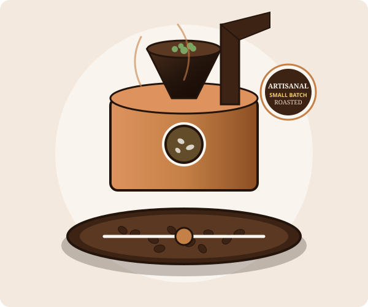

Direct Trade & Integrity
We know our growers by name. Sourcing directly eliminates middlemen, provides economic stability to origin communities, and guarantees traceable single-origin quality.
Bean & Brew started in the spring of 2018 with a humble, hand-restored vintage coffee cart and a singular mission: to strip away pretension from specialty coffee and replace it with genuine warmth, artisanal dedication, and neighborhood hospitality.
What began with two lifelong coffee roasters serving pour-overs to morning commuters on corner avenues has grown into a bustling, sunlit haven in the heart of the Craft Quarter. Every detail—from our reclaimed wood counters and hand-thrown ceramic mugs to our custom brass micro-roaster—was chosen to inspire slower, more mindful mornings.
We partner directly with regenerative coffee smallholders in Huila, Yirgacheffe, and Antigua, paying up to 45% above Fair Trade minimums to ensure farmer livelihood and soil health. Back in our kitchen, our pastry chefs arrive at dawn every day to roll croissants and whip mascarpone so your cup is always matched with perfection.

The guiding principles behind every roast and customer interaction.
We know our growers by name. Sourcing directly eliminates middlemen, provides economic stability to origin communities, and guarantees traceable single-origin quality.
We roast in small 10kg batches three times a week. This ensures the beans in your cup are at peak degassing vibrancy, unlocking natural sweetness without bitterness.
From casual laptop workstations to book clubs and acoustic open-mic evenings, Bean & Brew is designed as a peaceful sanctuary for our community.
We are open 7 days a week to brew your morning fuel, afternoon pick-me-up, and evening desserts.
| Day | Hours | Status |
|---|---|---|
| Monday | 7:00 AM – 8:00 PM | Regular |
| Tuesday | 7:00 AM – 8:00 PM | Regular |
| Wednesday | 7:00 AM – 8:00 PM | Regular |
| Thursday | 7:00 AM – 8:00 PM | Regular |
| Friday | 7:00 AM – 8:00 PM | Regular |
| Saturday | 8:00 AM – 9:00 PM | Brunch |
| Sunday | 8:00 AM – 9:00 PM | Brunch |
| Public Holidays | 8:00 AM – 6:00 PM | Special |
Note: Our scratch kitchen closes 30 minutes prior to café closing. Hand-crafted espresso and chilled beverages are served until the doors close.